1. 개요
- 숙박객의 후기 중
효빈광역시 중구 조유동3가에 위치한 3성급 비즈니스 및 테마 호텔. 7호선 트램 조유동3가역과 매우 인접해 있어 성지순례객과 관광객들에게 접근성이 무척 좋다.
이름만 들으면 평범한 호텔 같지만, 실상은 효빈시에서 가장 기묘하고 거대한 컨셉을 가진 성지순례 숙소 중 하나다. 이름 때문에 [러브 라이브! 선샤인!!] 팬들이 몰려들기 시작했고, 사장님이 이를 적극적으로 받아들이면서 단순한 콜라보를 넘어 지상 17층, 총 120실 규모 중 무려 84실을 테마 객실로 마개조한 무시무시한 덕력의 호텔로 변모했다. 하지만 정작 사장님의 '진짜 최애(오시)'는 치카가 아니라 카난이라는 지독한 반전이 숨어 있다.
1.1. 주요 임직원 및 스태프
- 토치만 사장님 (진성 카난 오시): 탄성군 워터드롭 호텔의 고석연 지배인과는 아주 먼 혈연 관계. 우연히 지은 이름으로 호텔이 대박 나자 뒤늦게 덕통사고를 당해 마츠우라 카난에게 인생을 배팅했다. 호텔 예산을 몰래 빼돌려 카난 굿즈를 밀수(?)하다가 직원들에게 등짝을 맞곤 하는 유쾌한 사장님이다.
- 수석 컨시어지 (덕력 만렙): 체크인부터 굿즈샵 안내, 심지어 성지순례 루트 컨설팅까지 원스톱으로 제공하는 베테랑 직원. 투숙객이 "요소로~"를 외치면 기계적인 미소와 함께 정확한 경례 자세로 화답한다.
- 하우스키핑(객실 청소) 여사님들: 84개에 달하는 테마 객실의 엄청난 네소베리 군단을 매일 완벽한 대형으로 정렬해 놓는 장인들. "카난 짱 머리칼은 조금 더 띄워야 해"라며 굿즈의 디테일까지 신경 쓰는 경지에 이르렀다.
2. 역사
2.1. 우연한 시작
2016년 개업 당시, 사장님은 호텔 이름을 '토치만(土治灣)'이라고 지었다. '땅(土)을 다스려(治) 만(灣)을 바라보다'라는, 효빈항을 조망하는 호텔에 걸맞은 아주 고상하고 중후한 의미였다. 물론 아무도 그 뜻을 모른다.
그런데 공교롭게도 이 이름의 발음이 [러브 라이브!] 시리즈의 어떤 밈(Meme)이나 일본어 발음(Tochiman)과 묘하게 겹치면서[1], 인터넷 커뮤니티에서 "효빈시에 러브라이브 호텔이 있다"는 소문이 퍼지기 시작했다. 갑자기 가방에 인형을 주렁주렁 매단 손님들이 몰려오자 사장님은 처음엔 당황했으나, 곧 이것이 돈 냄새임을 직감했다.
2.2. 자본주의적 타협(?)
사장님은 원래 덕후 기질이 조금 있었는데, 손님들의 열정에 감화되어 애니메이션을 정주행하게 되었다. 그리고 본인도 러브라이버가 되어버렸다. 성업일치. 이후 17층 규모의 신축 건물을 활용하여 로비에 대형 네소베리(누워있는 인형) 타워를 세우고, 공식 굿즈를 전시하는 등 본격적인 '초대형 오타쿠 친화 호텔'로 노선을 변경했다.
3. 시설 및 특징
3.1. 로비: 네소베리 타워
호텔 로비에 들어서면 가장 먼저 보이는 것이 거대한 네소베리 탑이다. 투숙객들이 기증하고 간 인형들과 사장님이 직접 공수해 온 인형들이 뒤섞여 거대한 피라미드를 이루고 있다. 프론트 데스크 직원이 먼저 "요소로~"라고 인사해주지는 않지만, 네소베리를 안고 체크인하는 것은 적극 권장된다.
3.2. 객실: 사장님의 반전 취향 및 Aqours 9인 9색 테마 호실 상세 분석
호텔 이름 '토치만' 때문에 사람들은 보통 타카미 치카(귤대장)나 와타나베 요우, 혹은 츠시마 요시코(타천사) 관련 테마를 기대한다. 물론 Aqours 멤버 전원의 굿즈가 골고루 배치되어 있긴 하다. 하지만 사장님의 진짜 최애는 마츠우라 카난이다. 그러나 전국 각지에서 몰려드는 120실 규모의 거대한 성지순례객들의 다양한 니즈를 충족시키기 위해, 현재 호텔 측은 각 층마다 아쿠아 멤버 9명 전원의 컨셉을 100% 고증한 테마 호실 84개를 운영 중이다. 사진을 통해 이 광기 어린 디테일을 낱낱이 파헤쳐보자.
-
🍊 치카 - 귤대장 룸:
방문을 여는 순간 오렌지색 벽지와 함께 사방에 감귤 모티브 소품이 가득한 생기 넘치는 방이다. 침대 중앙에는 무려 10개가 넘는 다양한 사이즈의 치카 네소베리로 쌓아 올린 '초대형 치카 네소베리 피라미드 탑'이 투숙객을 압도적으로 반긴다. 오른쪽 벽면 전체에는 마이크 모양과 오렌지 패턴, 그리고 하복을 입고 주먹을 쥔 치카의 거대한 일러스트가 프린팅되어 있다. 토치만 호텔을 하드캐리한 공식 마스코트 고해영을 기리기 위해 특별히 세팅되었다. 원목 책상 위에는 아이돌의 필수품인 마이크 프롭과 함께, 웰컴 드링크로 워터드롭 호텔에서 매일 아침 직배송되는 전설의 미끼 상품 '싸다싸 귤쥬스'가 5병이나 줄지어 서 있어 탄성군과 중구의 완벽한 자본주의적 콜라보를 증명한다.
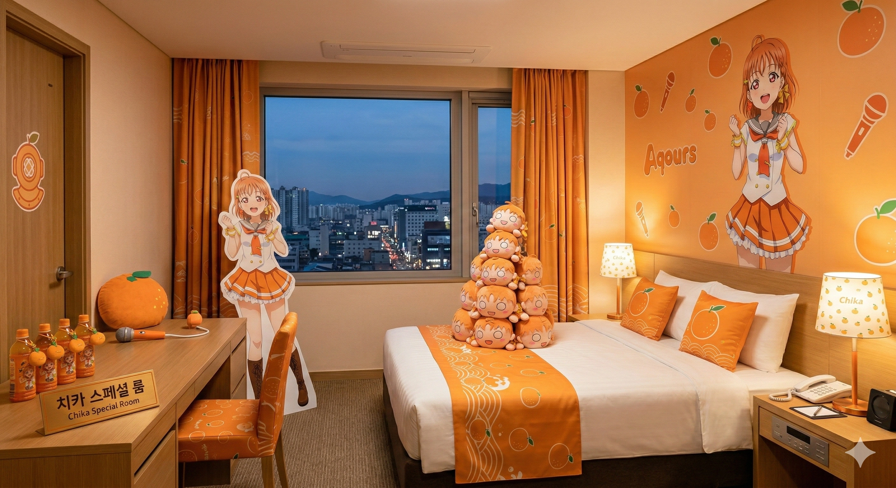
▲ 침대 위에 거대한 치카 네소베리 탑이 세워져 있는 치카 스위트룸. 벽면의 귤 패턴과 거대한 치카 일러스트가 방의 아이덴티티를 명확히 보여준다. 원목 책상에는 마이크 프롭과 싸다싸 귤쥬스가 일렬로 도열해 있다. -
🌸 리코 - 벚꽃 소나타 룸 (스위트룸 & 시장님 애용룸):
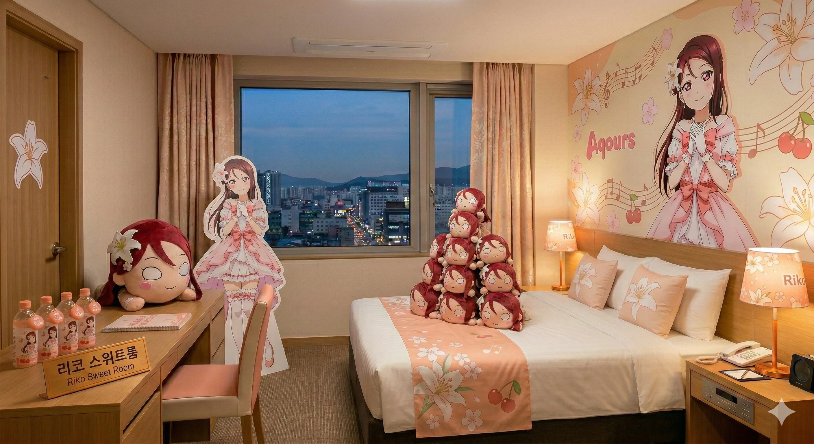
▲ 벚꽃과 백합, 음표를 모티브로 한 우아한 리코 스위트룸. 거대한 침대를 점령한 리코 네소베리 군단과 은은한 벚꽃 조명, 등신대가 눈에 띈다. 책상엔 커스텀 생수병이 놓여있다.방 전체가 우아한 벚꽃 핑크색 톤으로 꾸며져 있다. 스위트룸 벽면에는 백합꽃과 높은음자리표, 그리고 핑크색 프릴 드레스를 입은 리코의 일러스트가 화려하게 장식되어 있다. 침대에는 작은 리코 네소베리들이 탑을 이루고 있고, 책상에는 벚꽃 패키징이 된 리코 전용 커스텀 워터가 비치되어 있다.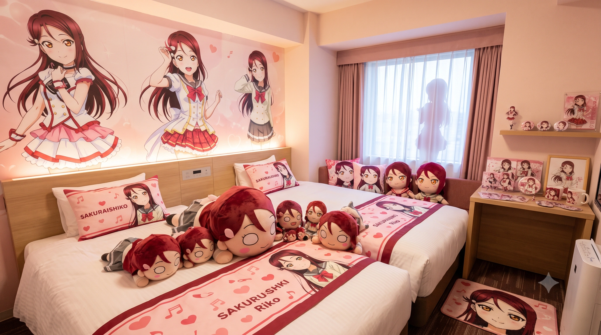
▲ 박효빈 시장과 천 비서실장이 당당하게 대관하여 덕질을 즐긴다는 소문의 그 방. 'SAKURAUCHI RIKO'가 새겨진 커스텀 침구와 엄청난 양의 굿즈 디테일이 돋보인다. 창가 실루엣마저 리코다.
특히 박효빈 시장이 사비로 대관하는 것으로 유명한 트윈룸 버전(아래 사진)은 그 광기가 상상을 초월한다. 'SAKURAUCHI RIKO'라는 영문이 큼지막하게 박힌 커스텀 베개와 이불 러너는 기본이고, 침대 위에는 테라 점보 네소베리가 엎드려 있다. 오른쪽 책상에는 리코 아크릴 스탠드, 머그컵, 캔뱃지가 마치 신단(祭壇)처럼 꾸며져 있으며, 심지어 창가 커튼 너머로 리코의 등신대 실루엣이 은은하게 비치도록 설계되어 팬들에게 압도적인 감동과 프라이빗한 덕질 공간을 선사한다. -
🐬 카난 - VVIP 다이빙 스위트룸 (총 3개 타입):
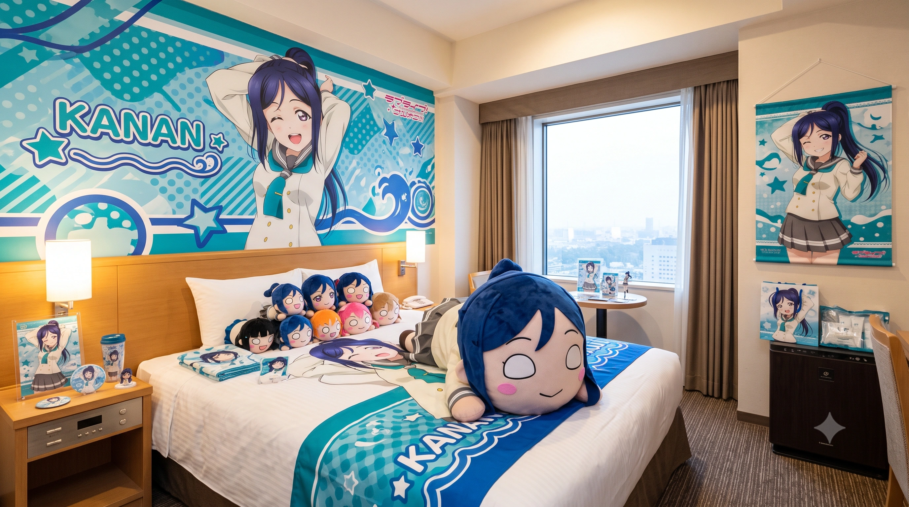
▲ 사장님의 흑심과 편애가 200% 반영된 첫 번째 카난 룸. 푸른 바다의 파도 패턴과 윙크하는 카난 일러스트, 초거대 점보 네소베리가 강렬하다.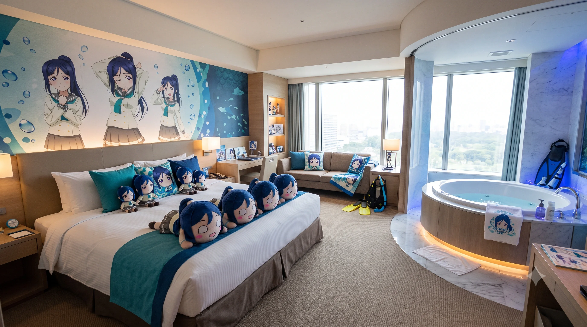
▲ 원형 스파 욕조 옆에 실제 오리발과 잠수복 프롭이 배치된 두 번째 카난 룸. 벽면을 대형 수족관 테마로 래핑해버린 사장님의 광기가 엿보인다.사장님의 지독한 편애가 공금 횡령 수준으로 담긴 에메랄드 그린 색상의 스위트룸. 호텔 밸런스를 무시하고 유일하게 컨셉이 3개나 존재한다.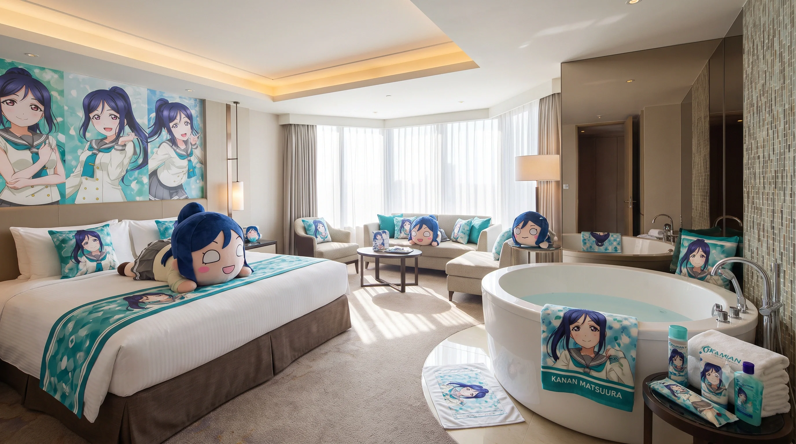
▲ 고급스러운 대형 원형 욕조와 에메랄드빛 카난 전용 타월, 어메니티, 대형 카난 일러스트가 빛나는 세 번째 카난 스위트. 채광이 미쳤다.
첫 번째 방은 스포티한 블루 톤의 파도 패턴과 함께 윙크하며 머리를 묶는 카난의 역동적인 일러스트가 침대 헤드보드를 장식한다. 두 번째 방은 아예 바닷속 수족관 테마로 벽면을 래핑하고, 통유리창 옆에 고급 원형 스파 욕조를 설치한 뒤 진짜 오리발과 웻수트 장비를 인테리어용 프롭으로 세팅해 놓은 사장님의 광기를 보여준다. 세 번째 방은 럭셔리한 채광을 자랑하는 코너 스위트로, 투숙객이 목욕을 하며 쉴 수 있도록 객실 한가운데 대형 욕조를 배치하고 카난 전용 커스텀 타월과 바디 어메니티를 완벽하게 구비했다. 어벤져스의 송과영(카난 포지션)이 방문하면 사장님이 묻지도 따지지도 않고 이 VVIP 방들 중 하나로 룸 업그레이드를 해주는 특혜가 있다. -
♦️ 다이아 - 뿟뿌 데스와 룸:
강렬한 레드 톤에 일본 전통 다다미방 요소를 모던하게 결합한 하이브리드 객실. 벽면 상단에는 'Dia Kurosawa'라는 필기체와 함께 붉은색 전통 마름모 패턴, 흩날리는 벚꽃잎, 그리고 학생회장의 위엄을 뽐내는 다이아의 거대한 일러스트가 화려하게 장식되어 있다. 침대에는 다이아의 얼굴이 박힌 초거대 테라 점보 네소베리가 엎드려 투숙객을 째려보고 있고, 침대 러너와 베개는 붉은색 타탄체크 패턴으로 엄격하고 세련된 분위기를 낸다. 창가 턱과 책상에는 다이아의 미니 피규어와 액자가 단 1cm의 오차도 없이 각 잡혀 진열되어 있다. 로스쿨생 석다연(다이아 포지션)이 혐오 세력 고소장이나 판례를 작성할 때마다 이 방의 엄숙한 분위기를 빌려 밤샘 폭풍 타이핑을 친다.
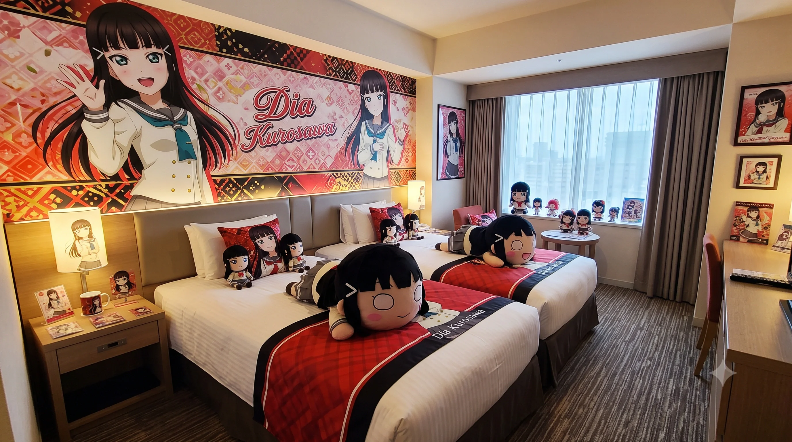
▲ 강렬한 레드와 일본 전통 화풍(和風)이 돋보이는 다이아 룸. 각 잡힌 레드 타탄체크 침구와 엄청난 양의 다이아 굿즈, 그리고 침대를 점령한 테라 점보 네소베리가 전시되어 있다. -
⛵ 요우 - 전속 전진 제복 룸 (신규 공개):
문을 열자마자 바다 내음과 파도 소리가 들릴 것만 같은 완벽한 스카이 블루 톤의 마린룩 테마 객실. 우측 벽면 전체에는 나침반과 조타핸들(Ship Wheel) 패턴, 그리고 선원 모자를 쓰고 당차게 경례(요소로!)를 하는 요우의 거대한 일러스트가 청량감을 더한다. 디테일의 악마답게, 목재 화장실 문짝과 침대 양옆의 조명 스탠드 갓에는 하얀색 닻(Anchor) 문양이 정교하게 새겨져 있다.
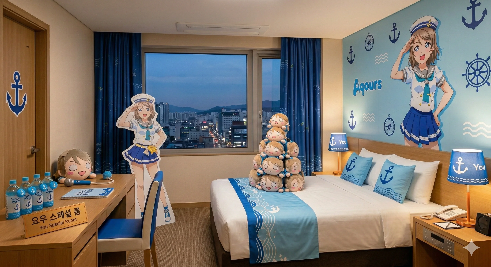
▲ 경쾌한 스카이 블루 톤의 마린룩 테마. 선원 모자를 쓴 요우의 거대한 일러스트와, 화장실 문, 조명 스탠드 등에 적용된 닻(Anchor) 모양 포인트가 엄청난 청량감을 준다.
책상 위에는 파란색 뚜껑과 닻 로고가 박힌 '요소로 워터(Yosoro Water)' 생수가 4병이나 가지런히 비치되어 있고, 요우의 컬러 마이크 프롭과 다이어리가 놓여 있다. 의자조차 파란색 등받이와 흰색 프레임의 마린 컬러로 맞췄다. 침대 중앙에는 요우 네소베리 10여 개가 옹기종기 피라미드 탑을 쌓고 투숙객을 향해 미소 짓고 있다. 한쪽 옷장 구석에는 고성능 공업용 재봉틀이 숨겨져 있어, 도선요(요우 포지션)가 투숙할 때마다 코스프레 의상을 밤새 직접 수선하곤 한다. -
😈 요시코 - 심연의 타천사 룸:
다크 브라운과 화이트 톤의 대비로 꾸며진 앤틱하고 고풍스러운 방. 벽면의 무늬는 요시코의 다양한 폼 잡는 포즈와 타락천사 문양으로 빼곡하게 도배되어 있고, 고급스러운 우드 프레임 액자에 요시코의 고해상도 일러스트 3점이 미술관 갤러리처럼 걸려 있다. 무거운 암막 커튼으로 햇빛을 완벽하게 차단하여 언제나 밤 같은 타천의 심연을 재현했다. 침대와 1인용 소파에는 썩소를 짓거나 윙크를 하는 다양한 표정의 요시코 네소베리와 쿠션들이 굴러다닌다. 중2병 환자 진선자가 주말마다 흑마법 의식을 치르기 위해 종종 대관하며, 가끔 마법진을 그리다 괴성이 새어 나오면 간호사 이리자가 마스터키로 난입해 등짝 스매시로 물리치료를 시전하는 소동이 벌어진다.
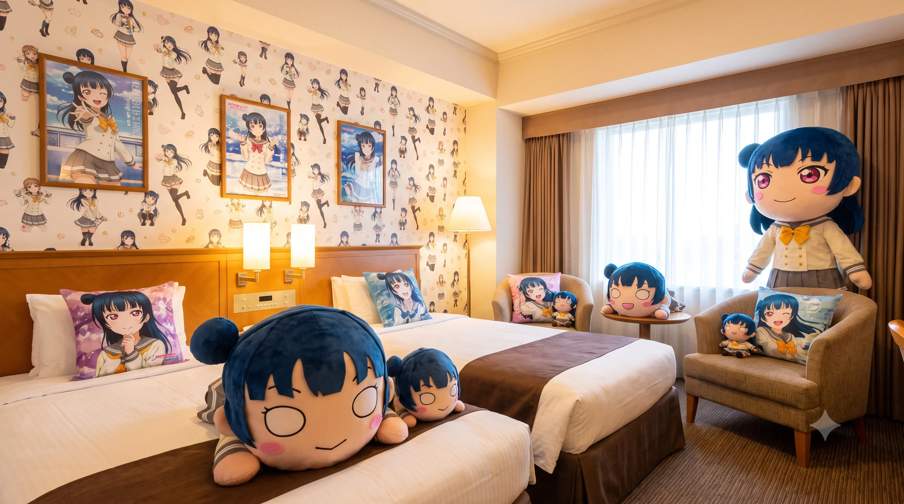
▲ 다크 브라운 톤의 차분한 색감 속에서 요시코의 다양한 일러스트 액자와 쿠션들이 리틀 데몬들을 유혹하는 방. 암막 커튼으로 심연을 완벽하게 재현했다. -
💮 하나마루 - 즈라 도서관 룸:
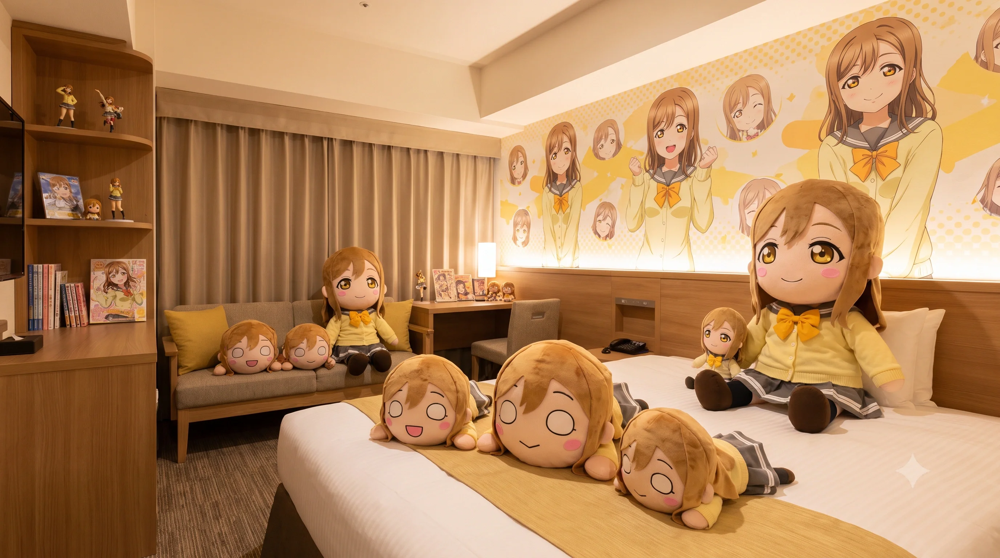
▲ 따뜻한 옐로우 톤의 조명 아래, 거대한 하나마루 굿즈와 책장 인테리어가 마음을 편안하게 해준다. 우측의 곡선형 책장이 포인트다.따뜻한 옐로우 톤에 포근한 나무 책장 인테리어가 돋보이는 힐링 테마 방. 침대 뒤쪽 벽면 백라이트 조명 패널에는 하나마루가 두 주먹을 쥐고 응원하는 모습과 함께, 만화경처럼 가득 채워진 수십 개의 천진난만한 표정들(놀란 얼굴, 빵 먹는 얼굴 등)이 아기자기하게 수놓아져 있다. 방 좌측의 곡선형 원목 책장에는 러브라이브 공식 팬북과 문학 소설, 그리고 미니 피규어들이 꼼꼼하게 꽂혀 있어 실제 작은 도서관 같은 아늑함을 준다. 침대와 패브릭 소파에는 "즈라~"를 외치는 듯한 네소베리들이 널브러져 있어 포근함을 더한다. 웰컴 푸드로 일본에서 공수한 놋포빵(길쭉한 빵)과 신선한 우유가 제공되어 빵순이 하마루(마루 포지션)의 최애 휴식처로 꼽힌다. ▲ 벽면에 가득 찬 하나마루의 다양한 표정(빵 먹는 얼굴, 놀란 얼굴 등) 일러스트가 투숙객을 반기는 최고의 힐링 공간.
▲ 벽면에 가득 찬 하나마루의 다양한 표정(빵 먹는 얼굴, 놀란 얼굴 등) 일러스트가 투숙객을 반기는 최고의 힐링 공간. -
✨ 마리 - 샤이니 골드 스위트룸:
눈이 부실 정도로 번쩍거리는 보라색과 황금색으로 칠갑을 해놓은 초호화 코너 스위트룸. 침대 헤드보드 위 벽면에는 "MARI"라는 거대한 영문 로고와 함께 청록색, 노란색 별, 음표, 그리고 파도 문양이 화려한 팝아트처럼 새겨져 있어, 이탈리아계 혼혈의 글로벌 호텔 체인 부잣집 영애다운 압도적인 포스를 뿜어낸다. 침대 러너와 쿠션 역시 럭셔리한 퍼플/골드 컬러 실크 재질로 고급스럽게 마감되어 있다. 금수저 오하리(마리 포지션)가 어벤져스에게 룸서비스 골든벨을 울릴 때 아지트로 전세 내는 방이며, 호텔에서 방음 시공이 가장 빵빵하게 되어 있어 오하리가 밤새 "샤이니!!"를 외치며 난동을 부려도 밖으로 새어 나가지 않는다.
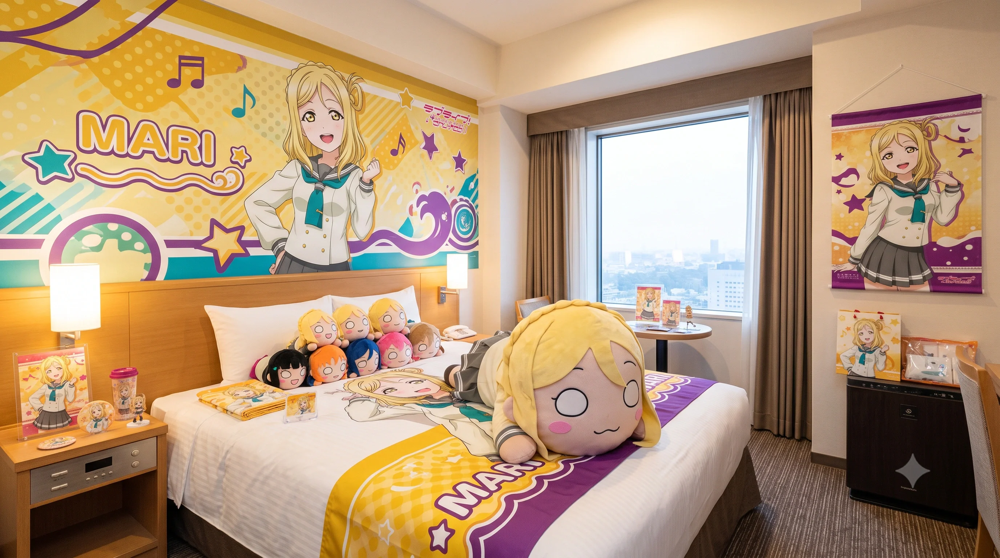
▲ 노란색과 보라색의 강렬한 보색 대비, 그리고 압도적인 자본의 맛이 느껴지는 마리 스위트룸. 벽면의 "MARI" 로고가 화려하다. -
🍭 루비 - 간바루비 코튼 룸:
문을 열자마자 솜사탕 향기가 날 것 같은, 마젠타 핑크색 톤으로 점철된 궁극의 귀여운 객실. 벽면에는 루비의 삐진 표정, 훌쩍이는 표정, 당황한 표정, 활짝 웃는 표정 등 수십 개의 얼굴이 "♥RUBY♥"라는 글자와 하트, 도트 문양 속에 빼곡히 채워져 있어 시선을 강탈한다.
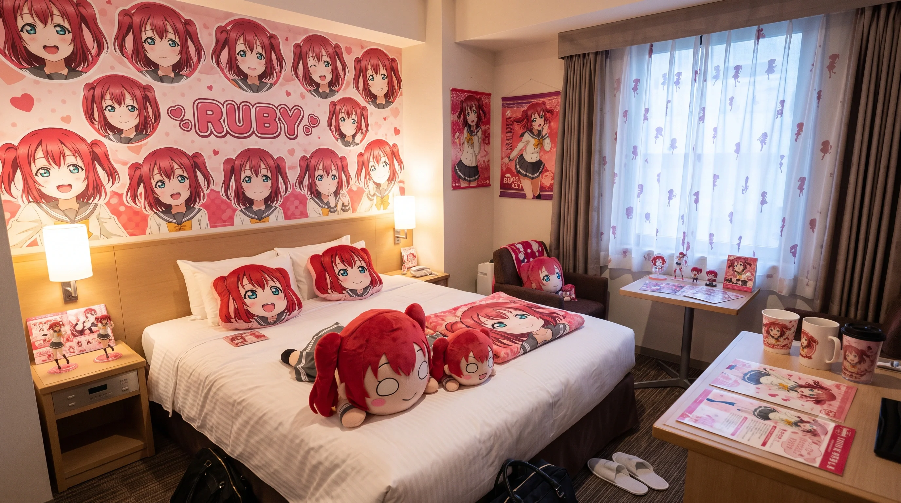
▲ 침구부터 커튼, 벽지, 소파, 심지어 테이블 위의 테이크아웃 종이컵 세트까지 시선 닿는 모든 곳이 마젠타 핑크빛 귀여움으로 폭발하는 루비 룸.
침대의 두꺼운 이불조차 루비의 대형 일러스트가 고화질로 인쇄된 커스텀 침구이며, 베개 역시 루비 얼굴 쿠션이다. 창가 암막 커튼에도 루비의 실루엣 패턴이 인쇄되어 있다. 가장 무서운 디테일은 창가 테이블의 테이크아웃 종이컵 3개와 종이 코스터, 런천 매트마저 전부 루비 전용 굿즈로 주문 제작되어 세팅되어 있다는 것이다. 낯가림이 심한 석루비(루비 포지션)가 강성 일진 언니들에게 기가 쫙 빨렸을 때 숨어서 힐링하며 에너지를 충전하는 안식처다.
3.3. 부대 시설 (10대 프리미엄 시설 초정밀 분석)
3성급 17층 규모의 거대한 덩치에 걸맞게, 그리고 전 세계에서 몰려드는 쉴 새 없는 오타쿠 성지순례객들의 광적인 에너지를 완벽하게 수용하고 돈을 빨아들이기 위해 어지간한 4~5성급 특급 호텔 부럽지 않은 10대 핵심 부대시설을 꽉꽉 채워 갖추고 있다. 사장님의 덕력과 자본주의가 결합된 이 시설들은 호텔 투숙객뿐만 아니라 지역 주민들에게도 엄청난 화제이자 명소로 자리 잡았다.
- 1. 우라노호시 굿즈 매점 (1층 로비):
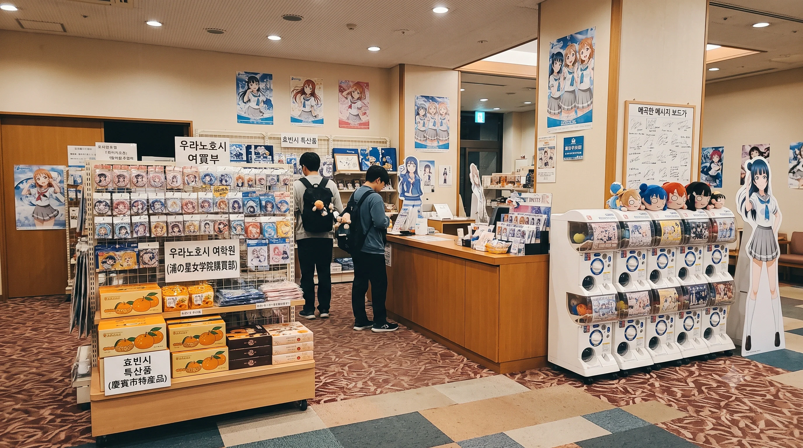
▲ 단순한 기념품 코너가 아니라 웬만한 대형 오프라인 애니 샵 스케일을 자랑하는 우라노호시 굿즈 매점. 투숙객의 지갑을 완벽하게 털어간다.일반 비즈니스 호텔 로비에 흔히 구석을 차지하고 있는 밋밋하고 재미없는 24시간 편의점 따위는 개업 1년 만에 진작에 철거해버렸다. 그 자리에 1층 로비의 가장 눈에 띄는 알짜배기 센터 공간을 통째로 털어 넣어 만든 초대형 공식 굿즈샵이다. 간판부터 대놓고 원작 학교 이름인 '우라노호시 여학원 구매부(浦の星女学院購買部)'라고 거대하게 적어 놓았다.
이곳의 라인업은 무시무시하다. 토치만 사장님이 주기적으로 일본 누마즈 현지에 직접 날아가 보따리상에 빙의하여 박스째로 쓸어 떼온 일본 직수입 한정판 피규어, 태피스트리, 의류 굿즈들이 1열을 장식한다. 2열에는 지역 상권과 치밀하게 연계하여 기획한 효빈시 한정 콜라보 특산물들이 진열되어 있다. 예를 들어, 탄성군 귤 농장과 계약한 '치카의 감귤 타르트 세트', 고해해수욕장의 모래가 들어간 '카난 아쿠아 캔들', 수제 비누 등이 매대 가득 산더미처럼 쌓여 있다. 가장 무서운 함정은 입구 라인이다. 캐릭터별, 유닛별 캔뱃지와 러버스트랩을 무작위로 뽑을 수 있는 가챠(캡슐 뽑기) 기계가 무려 15대나 로비 벽면을 따라 2단으로 위협적인 요새처럼 늘어서 있다. 이 때문에 오타쿠 투숙객들은 프론트에서 체크인하기도 전에 홀린 듯이 지폐를 동전으로 바꿔가며 캡슐을 돌려대어, 입실도 전에 지갑을 무자비하게 털리게 만드는 악마의 블랙홀 같은 자본주의의 공간이다.- 2. 조식 뷔페 식당 '선샤인 티어즈' (2층):
호텔 2층 전체를 사용하는, 통유리창 너머로 아침 햇살이 눈부시게 들어오는 거대한 조식 뷔페 식당이다. 입구 벽면에는 청록색 바다 톤 페인트 위에 빛나는 네온사인으로 'SUNSHINE TEARS'라고 적힌 화려한 간판이 인스타 감성을 자극한다. 일반적인 호텔 조식인 흔해 빠진 스크램블 에그와 베이컨만 생각하고 내려왔다면 엄청난 오산이다.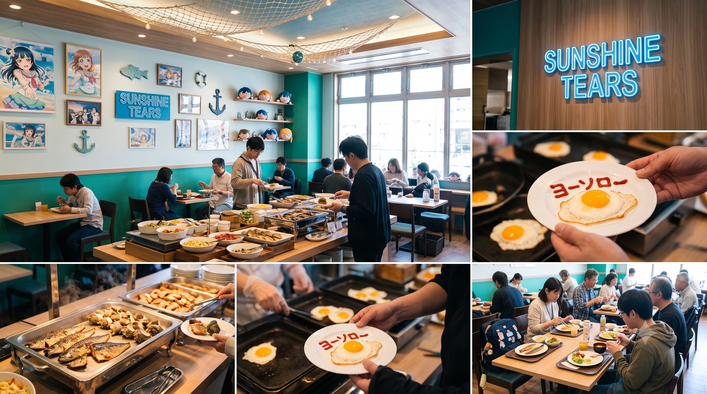
▲ 원작의 어촌 마을을 고증해 산더미처럼 쌓인 생선 구이와, 셰프가 직접 케첩으로 글씨를 써주는 계란 프라이 서비스가 일품인 뷔페. 네온사인 간판이 빛난다.
원작 애니메이션의 무대인 시즈오카현 우치우라 바닷가 어촌 마을의 식단을 미친 듯한 집착으로 고증했다. 아침 7시 땡 치자마자 뷔페 메인 스테이션에는 어른 팔뚝만 한 거대한 고등어 구이와 전갱이 튀김, 그리고 껍질째 숯불에 구워낸 사자에(소라) 구이가 산더미처럼 쌓여 있는 기적의 해산물 파티가 펼쳐진다. 한쪽에는 신선한 참치와 연어, 날치알을 밥 위에 마음껏 얹어 먹을 수 있는 셀프 카이센동(회덮밥) 코너까지 웅장하게 마련되어 있어, 투숙객들 사이에서 "이게 아침 식사인지 수산시장 저녁 만찬인지 헷갈린다"는 행복한 비명이 터져 나온다.
하지만 이 식당의 진정한 하이라이트이자 명물은 단연 '계란 프라이 라이브 캘리그라피 스테이션'이다. 오타쿠의 니즈를 완벽하게 파악한 셰프가 철판 앞에서 대기하며, 투숙객의 요청에 따라 즉석에서 구워낸 오므라이스나 써니사이드업 프라이 위에 뾰족한 소스통을 쥔 손놀림으로 직접 케첩 글씨를 써준다. '요소로(ヨーソロー)', '샤이니(Shiny)', '뿟뿌 데스와', '간바루비', '타천강림' 등 캐릭터의 상징적인 대사나 맞춤형 캘리그라피를 예술적으로 그려주는 장인 서비스를 제공한다. 이 한정판 케첩 아트를 받아 사진을 찍기 위해, 매일 아침 좀비 같은 오타쿠 투숙객들이 셰프 앞에 길게 대기줄을 서는 진풍경이 매일같이 연출된다.- 3. 대연회장 '아쿠아마린 홀' (3층): 3성급 호텔의 자존심이자, 한국관광공사 등급 심사 기준 면적을 가볍게 두 배 이상 넘겨버린 압도적인 층고를 자랑하는 핵심 필수 연회 시설이다. 기둥 하나 없이 시야가 탁 트인 이 대형 홀은 최대 350명의 인원을 넉넉하게 수용할 수 있다.
평소 평일 낮 시간대에는 따분한 중소기업 세미나나 지역 단체의 지루한 워크숍이 열려야 정상적인 비즈니스 호텔의 생태계겠지만, 이 아쿠아마린 홀의 예약 스케줄표는 1년 365일 내내 일반적인 행사가 전멸 수준이다. 대신 그 자리를 전국구 규모의 대형 서브컬처 동인 행사(온리전), 끝도 없이 캐리어가 굴러가는 굿즈 물물 교환회, 유명 일본 성우의 생일 카페 파티 이벤트, 그리고 애니메이션 극장판 오프라인 단체 응원 상영회 및 일본 현지 돔 구장 라이브 뷰잉 장소로 대관이 1년 치가 빈틈없이 꽉 차 있다.
이러한 오타쿠 친화적 행사를 완벽하게 지원하기 위해, 무대 전면에는 벽을 꽉 채우는 초대형 4K 해상도 LED 스크린이 설치되어 있다. 더욱 놀라운 것은 벽면과 천장 곳곳에 수천만 원을 들여 매립한 돌비 애트모스(Dolby Atmos) 서라운드 음향 시스템이다. 베이스가 빵빵하게 울려 퍼지는 음향은 실제 도쿄돔 콘서트장 뺨치는 미친 현장감과 전율을 자랑하여, 이곳에서 라이브 뷰잉을 본 덕후들은 다른 영화관 대관 행사는 성에 차지 않아 돌아갈 수 없게 된다는 마성의 홀이다.- 4. 루프탑 미니 노천탕 '리틀 워터드롭' (17층 야외): 이 호텔의 공식 홍보대사인 고해영의 본가, 효빈시 최대의 관광 명소인 탄성군의 워터드롭 호텔이 자랑하는 전설적인 '귤탕' 노천탕을 17층 옥상 코너 공간에 미니멀하게, 그러나 럭셔리하게 오마주하여 조성한 야외 온천 시설이다. 무거운 굿즈 에코백을 메고 하루 종일 성지순례와 쇼핑 강행군으로 지친 투숙객이라면 누구나 객실에 비치된 유카타로 환복 후 무료로 입장할 수 있다.
탕에 몸을 푹 담그면 투명한 유리 난간 너머로 탁 트인 효빈시 중구의 화려한 도심 빌딩 숲 네온사인 야경이 파노라마처럼 펼쳐져, 시원한 밤바람을 맞으며 피로를 한 방에 풀 수 있는 최고의 힐링 스팟이다. 원래는 평범하고 은은한 편백나무(히노끼) 향이 나는 입욕제를 풀어놓아 고상한 분위기를 유지하지만, 호텔에 상주하는 카난 악성 팬 사장님이 가끔 새벽이나 인적이 드문 시간에 몰래 옥상에 올라오는 만행을 저지른다. 그는 온천수 위에 초록색 방수 야광봉 수십 개를 던져놓거나, 카난 미니 SD 피규어들을 튜브에 태워 동동 띄워놓는 노골적인 흑심 섞인 테러를 저지른다. 다음 날 아침 일찍 상쾌하게 몸을 지지러 온 일반 투숙객들이 온천 수면 위에 둥둥 떠다니는 초록색 발광 물체들을 보고 기겁하거나 헛웃음을 짓게 만드는 소소하지만 확실한 코미디가 살아 숨 쉬는 공간이다.- 5. 피트니스 센터 '해피 파티 트레인' (지하 1층): 건강한 덕질의 기본은 강인한 하체와 체력이라는 진리를 실천하기 위해 만들어진, 땀 냄새와 오타쿠의 열정이 뒤섞인 공간이다. 런닝머신(트레드밀) 10대와 최고급 덤벨 세트, 스미스 머신이 훌륭하게 갖춰져 있지만, 이곳의 진정한 정체성은 벽면 인테리어에 있다.
런닝머신 전면 유리에 설치된 100인치 대형 스마트 스크린에서는 뉴스 채널이나 스포츠 중계 대신, 러브라이브 시리즈의 역대 라이브 콘서트 영상과 애니메이션 명장면이 24시간 내내 풀HD 화질로 쉴 새 없이 돌아간다. 이어폰을 끼지 않아도 펌핑용 BGM으로 잔잔한 발라드나 흔한 헬스장 팝송 따위는 절대 취급하지 않으며, 항상 180 BPM을 가볍게 넘기는 빠르고 비트감 터지는 애니송 댄스곡(예: 스릴링 원 웨이, 해피 파티 트레인 등)이 귀청이 떨어지게 쾅쾅 흘러나와 러닝의 템포를 강제로 끌어올린다.
밤 10시가 넘어 투숙객들이 야식을 먹고 죄책감에 내려오는 시간이 되면, 흔한 언더아머나 나이키 헬스복 대신 화려한 최애캐 얼굴이 대문짝만하게 박힌 풀그래픽 라이브 티셔츠를 입고 땀을 뻘뻘 빼는 덕후들을 흔히 볼 수 있다. 심지어 쉬는 시간마다 덤벨 대신 개인 야광봉을 꺼내 들고 스크린의 안무를 따라 춤을 추는 기괴하고도 열정적인 유산소 운동 장면이 연출되는 마경이다.- 6. 비즈니스 센터 '길티 키스 라운지' (1층 안쪽): 겉보기엔 유리 파티션으로 나뉘어 그저 평범한 비즈니스 출장객들이 급한 엑셀 업무나 이메일을 조용히 처리하는 고급스러운 공간 같지만, 실상은 전혀 다르다. 이 라운지는 무엇보다 투숙객들의 인생이 걸린 일본 현지 돔 콘서트 '초전박살 선착순 티켓팅'을 피 터지게 치러내야 하는 오타쿠 전사들을 위해 치밀하게 맞춤 설계된 최전방 전장(戰場)이다.
핑 오류를 막기 위해 초고속 기가 인터넷 전용 광랜이 다이렉트로 깔린 최고급 사양의 게이밍 데스크탑 PC 10대와, 빠른 반응 속도를 자랑하는 기계식 키보드, 게이밍 마우스가 풀세트로 완비되어 있다. 옆에는 복잡한 비행기 항공권 및 이티켓(e-ticket) 바우처 출력을 위한 고속 컬러 레이저 프린터가 상시 대기 중이다.
일본의 악명 높은 티켓팅 서버(이플러스, 티켓피아 등)의 선착순 예매가 열리는 주말 낮이나 결과 발표가 있는 날 밤 18시에는, PC방 대회석을 방불케 하는 살벌한 긴장감이 라운지 전체를 감돈다. 정각을 알리는 서버 시계의 카운트다운과 함께 마우스를 부술 듯한 광클 소리만 타닥타닥 울려 퍼지며, 당락의 결과 화면이 뜨는 순간 누군가의 입에서는 세상을 다 가진 듯한 환호성이, 다른 PC에서는 엎드려 통곡하는 절망의 오열이 로비 복도까지 생생하게 울려 퍼지는 희비 교차의 눈물겨운 라운지다.- 7. 코인 세탁실 '샤론 워시' (지하 1층): 여름철 무더위 속 효빈시 일대를 걷는 성지순례 강행군으로 땀에 찌든 무거운 코스프레 의상이나, 전날 밤 3층 아쿠아마린 홀에서 열광적인 라이브 콜(Call)을 외치고 점프를 뛰느라 흠뻑 젖은 굿즈 티셔츠를 다음 날 쾌적하게 다시 입을 수 있도록 배려된 런드리 룸이다. 대용량 15kg급 드럼 세탁기와 고열 뽀송 건조기 15대가 넓은 벽면을 꽉 채우고 24시간 내내 쉴 새 없이 윙윙 돌아간다.
이곳의 가장 큰 특징은 호텔 측의 지독한 컨셉질이다. 세탁 세제와 섬유유연제 자동판매기에는 시판용 다우니나 테크 같은 일반 세제 상표는 아예 입고조차 하지 않는다. 대신 주문 제작한 상큼한 과일향의 '치카의 고해 오렌지 향'과 가슴속까지 시원해지는 '카난의 효빈 아쿠아 마린 향' 딱 두 가지 라인업만을 융통성 없이 고집하여 판매하고 있다. 덕분에 이 세탁실에서 빨래를 마치고 나온 투숙객들이 복도를 지나가면, 오렌지와 바다 향기가 진동하여 누가 어느 세제를 썼는지 단번에 알아맞힐 수 있을 정도다. 세탁을 기다리는 동안 앉아 쉴 수 있는 소파 구역에는 방명록 노트가 놓여 있어 투숙객들끼리 덕질의 흔적을 남기는 소통의 장이 되기도 한다.- 8. 루프탑 바 '마리의 샤이니 나이트' (17층 야외 테라스): 효빈시 중구의 화려한 네온사인과 자동차 불빛이 그리는 환상적인 야경을 17층 최고 높이에서 고급스럽게 내려다보며 위스키와 칵테일을 즐길 수 있는, 어른들의 덕질을 위한 성인 투숙객 전용의 프라이빗 칵테일 바(Bar)다. 어두운 간접 조명과 대리석 바 카운터, 그리고 정장을 쫙 빼입은 바텐더의 젠틀한 복장은 영락없는 5성급 특급 호텔 라운지 그 자체지만, 가죽 커버로 덮인 메뉴판을 여는 순간 뇌 정지와 함께 극심한 혼란이 찾아온다.
칵테일 메뉴 이름이 평범한 '모히또'나 '마가리타'가 아니라, 전부 애니메이션 캐릭터의 필살기 스킬명이나 유닛 노래 제목으로 도배되어 있기 때문이다. 예를 들어, 민트가 듬뿍 들어간 상큼한 진토닉은 '밤하늘은 뭐든 알고 있어 진토닉', 푸른색이 감도는 달달한 럼 베이스 칵테일은 '코이아쿠 블루 하와이', 강렬한 도수를 자랑하는 붉은색 보드카 샷은 '길티 나이트 베리 샷', 달콤씁쓸한 어른의 맛은 '미숙 드리머 마티니'로 적혀 있다.
덕분에 호텔의 컨셉을 전혀 모르고 그저 분위기 잡으러 옥상에 올라온 일반인 출장객이나 커플 손님들은, 근엄한 표정의 바텐더에게 메뉴를 주문할 때 극심한 수치심과 인지 부조화를 뼈저리게 견뎌내며 "저기요... 저희 미숙 드리머 한 잔이랑... 길티 나이트... 이거 두 잔 주세요..."라고 얼굴을 붉히며 더듬거리게 만드는 잔인하고도 유쾌한 함정이 숨어 있는 바다.- 9. 프라이빗 가라오케 룸 '아젤리아' (지하 2층 구석): 투숙객들의 주체할 수 없는 덕력과 흥을 합법적(?)으로 분출하기 위해 특별히 지하 깊숙한 곳에 마련된, 완벽한 3중 흡음재 방음 시설을 갖춘 프리미엄 코인 노래방이다. 두꺼운 철문으로 된 방음 부스 문을 닫으면 밖에서는 안에서 C4 폭탄이 터져도 모를 정도로 완벽한 차음력을 자랑한다.
5개의 객실마다 일본 현지 노래방 기기인 최신형 'JOYSOUND MAX GO' 기기가 관세를 물고 완벽하게 직수입되어 온라인망에 연결 세팅되어 있다. 덕분에 투숙객들은 일본 현지와 100% 똑같은 환경에서 최신 애니송과 보컬로이드 곡, 그리고 본인 확인용 라이브 MV 영상을 보며 노래를 부를 수 있다. 좁은 방음 부스 안에서 남의 눈치, 층간 소음 눈치 전혀 보지 않고 마음껏 120데시벨의 떼창과 익룡 콜(Call)을 목이 터져라 외치며 밤새 열창할 수 있는 해방구다.
더욱 완벽한 몰입을 위해 프론트 데스크에 룸키를 맡기고 요청하면, 일반적인 탬버린 대신 고성능 전자 사이리움(컬러 체인지가 가능한 야광봉 킹블레이드) 2자루 대여 서비스를 기본 옵션으로 무상 제공한다. 이 야광봉을 켜는 순간, 어두운 가라오케 방 안은 순식간에 도쿄돔 라이브 뷰잉 회장의 최전열 객석으로 변모하는 마법을 경험할 수 있다.- 10. 테마 사진 스튜디오 '아쿠아 갤러리' (2층 복도 끝): 짐이 가득해 좁고, 밤이 되면 조명이 어두침침해지는 일반 객실에서 차마 다 찍지 못한 심혈을 기울인 코스프레 사진을, 아예 각 잡고 전문적으로 촬영할 수 있도록 호텔 측에서 작정하고 멍석을 깔아준 미친 스튜디오 공간이다. 2층 복도 끝의 채광 좋은 넓은 빈 객실 두 개를 과감하게 벽을 터서 하나로 만들었다.
내부에는 전문 상업 사진관 급의 대형 지속광 소프트박스 조명 3세트, 링 라이트, 다채로운 컬러로 전동 롤업이 가능한 크로마키 배경지, 전신 거울, 반사판이 꼼꼼하게 구비된 미친 디테일의 셀프 렌탈 스튜디오다. 투숙객이라면 예약 보드에 이름을 적고 1시간 단위로 무료 대관이 가능하다.
가장 폭발적인 인기를 끄는 것은 소품 대여소다. 스튜디오 옷장에는 원작 학교인 '우라노호시 여학원'의 학년별 넥타이 색깔(빨강, 초록, 노랑)이 모두 맞춰진 동복 및 하복 세일러복 제복 세트 20여 벌과, 다양한 캐릭터의 세팅된 가발 대여 서비스가 구비되어 있다. 이 대여 서비스는 외부 스튜디오보다 훨씬 저렴한 1시간 5천 원이라는 혜자로운 가격에 쏠쏠하게 운영 중이다. 덕분에 주말이나 페스티벌 기간만 되면 완벽한 인증샷을 건지려는 코스어들과 인플루언서들, 심지어 재미로 입어보려는 일반인 투숙객들까지 몰려들어 대기 예약표가 빽빽하게 꽉 차는 최고의 인기 부대시설로 자리매김했다.4. 공식 마스코트 고해영과 Aqours 오시 어벤져스, 그리고 레전드 일화
4.1. 워터드롭(2성급)과 토치만(3성급)의 자본주의적 신경전: 홍보대사의 딜레마
놀랍게도 토치만 호텔의 사장님은 당가동 최고의 서브컬처 자경단 Aqours 오시 어벤져스의 리더 고해영 가문의 아주 먼 친척 아저씨다. 이 복잡한 족보와 자본주의가 얽힌 두 호텔 간의 관계는 매우 기형적이고 재미있다. 고해영의 본가인 탄성군의 워터드롭 호텔은 근본 넘치는 귤 성지이지만 현재 '2성급'에 머물러 있어, 어떻게든 연회장을 증축해 3성급으로 올라가려 피똥을 싸는 중이다.
반면 토치만 호텔은 우연히 지은 이름 하나로 대박이 났지만 건물 체급이 커 처음부터 '3성급' 비즈니스 호텔로 시작했다. 어느 날 명절 친척 모임에서 해영을 유심히 본 토치만 사장님은 "네가 인터넷에서 그 유명한 치카 도플갱어냐? 우리 호텔 홍보대사 좀 해라! 이건 3성급에 날개를 다는 미친 기회다!"라며 덜컥 모델을 제안했다. 이에 워터드롭의 고석연 지배인은 "내가 애지중지 키운 내 딸내미(치카 본체)와 귤 컨셉을 왜 3성급인 니네가 쏙 빼가서 꿀을 빠냐!"며 극대노했지만, 토치만 사장님이 제시한 어마어마한 광고 모델료(용돈)와 "싸다싸 귤쥬스 전량 매입" 조건에 결국 눈을 감고 말았다.
그 결과, 전국의 러브라이버들이 '3성급의 쾌적한 시설 + 진짜 도플갱어 고해영의 실물'을 동시에 즐기기 위해 교통이 편한 중구 토치만 호텔로 성지순례를 핑계로 미친 듯이 몰려들었다. 토치만 호텔은 워터드롭의 근본(고해영)을 쪽쪽 빨아먹으며 객실 단가를 올려 매출이 수직 상승하는 대박을 쳤고, 해영은 친척 아저씨로부터 엄청난 로열티를 짭짤하게 챙겨 그 돈을 모조리 카난 굿즈를 매입하는 데 쏟아부으며 완벽한 '성공한 자본주의 덕후'의 표본이 되었다. 이 때문에 두 사장님은 만날 때마다 서로 "니네가 우리 덕분에 돈 버는 거다"라며 으르렁거리는 묘한 공생 관계를 유지 중이다.
4.2. 어벤져스의 자본주의 아지트
이후 토치만 호텔은 리에라몰 VIP 라운지와 더불어 어벤져스의 제2의 아지트 겸 자본주의적 교류의 장으로 쓰이고 있다. 평소엔 팩폭과 물리치료를 일삼는 살벌한 당가동 어벤져스지만, 성지순례 기분을 내거나 남의 돈(오하리의 법인카드)으로 호캉스를 즐길 때는 어김없이 토치만 호텔 17층 스위트룸으로 몰려와 네소베리 탑 앞에서 단체 사진을 찍으며 호의호식한다.
4.3. 토치만 호텔 레전드 일화 10선 (초대형 사건 사고 모음)
호텔 규모가 17층 120실로 거대해지고 성지순례객들이 365일 내내 쏟아져 들어오면서, 토치만 호텔에서는 일반적인 숙박업소라면 감히 상상도 할 수 없는 대환장 코미디 일화들이 터져 나오고 있다. 1건당 스케일이 남다른 전설의 10대 레전드 사건들을 공개한다.
1. 토치만 사장 vs 워터드롭 고석연의 '영혼을 건 오시 배틀' 신경전
먼 친척이자 같은 서브컬처 숙박업계(?)에 종사하는 두 사장님은 명절이나 가족 행사로 만날 때마다 서로의 최애(치카 vs 카난)와 호텔 등급을 두고 유치찬란함의 극치를 달리는 피 튀기는 신경전을 벌인다. 어느 추석 명절날 워터드롭 호텔의 고석연 지배인이 제사상 앞에서 대놓고 "우리 천가역 앞 호텔이야말로 1층 로비부터 진짜 감귤이 박스째로 썩어 넘치는 진짜배기 근본 귤 성지 아니겠냐. 니네 호텔은 이름만 토치만이지, 우리 딸내미 얼굴마담으로 세워서 3성급 뱃지 달고 꿀 빠는 짝퉁 기생충 아니냐!"며 매출 장부와 핏줄의 정통성을 앞세워 뼈 때리는 도발을 시전했다.
자신의 호텔이 워터드롭에 많은 것을 빚지고 있다는 팩트 폭력에 자존심을 긁혀 극대노한 토치만 사장이 입고 있던 양복 넥타이를 거칠게 풀어헤치며 제사상 테이블을 박차고 일어났다. "무슨 개소리야! 우리 17층 VVIP 다이빙 스위트룸(카난 룸)은 1박에 무려 30만 원인데도 전국에서 몰려들어 6개월 치 예약이 꽉 찼어! 심지어 암표 프리미엄까지 붙어서 50만 원에 거래되는 마당에 니네 낡은 2성급 여관방이 어딜 비벼! 이게 바로 3성급 자본과 카난의 압도적인 힘이다!"라며 두꺼운 호텔 월간 매출 장부와 한정판 카난 대형 태피스트리를 제사상 한가운데에 내리치며 찍어 누르려 했다. 집안 어른들이 곶감을 던지며 경악하며 말리려 했으나 두 아저씨의 핏대를 세운 오타쿠 배틀은 멈출 줄 몰랐다.
결국 이 꼴을 보다 못한 토치만의 홍보대사이자 고석연의 친딸인 고해영이 머리의 바보털을 빳빳하게 세우고 제사상을 엎을 기세로 난입했다. "토치만 삼촌!! 한 번만 더 예산 빼돌려서 지하 창고에 카난 굿즈 몰래 밀수하다 걸리면 당장 경찰 부르고 초상권 홍보 모델 위약금 천만 원 청구할 거야 캉캉!! 그리고 아빠도 2성급 주제에 귤 좀 그만 쌓아놔! 호텔 로비에서 썩은 파리 날리고 과일 썩은 내 나잖아!!"라며 양쪽 모두에게 귀가 터질 듯한 양비론 사자후를 토해내며 강제 중재에 나서야만 했던, 눈물겹고도 어이없는 자본주의 집안싸움의 결정판이다.2. 임은혜의 '메구미 룸 개조 현질 시도'와 철벽 방어, 그리고 리에라몰의 나비효과
유튜브 구독자 100만 명을 자랑하는 리에라몰 일가의 영애 임은혜가 토치만 호텔의 압도적인 오타쿠 인프라에 반해버려 벌인 엄청난 기행이다. 은혜는 토치만 사장님을 직접 찾아가, "사장님! 남는 코너 객실 하나만 저의 최애인 '후지시마 메구미' 테마 룸으로 싹 다 개조해 주세요! 인테리어 공사비는 물론이고 향후 5년 치 숙박비까지 제가 현찰 선불로 쏘겠습니다 큥💖!"이라며 0이 엄청나게 붙은 수표를 흔들며 자본주의적 현질을 시도했다.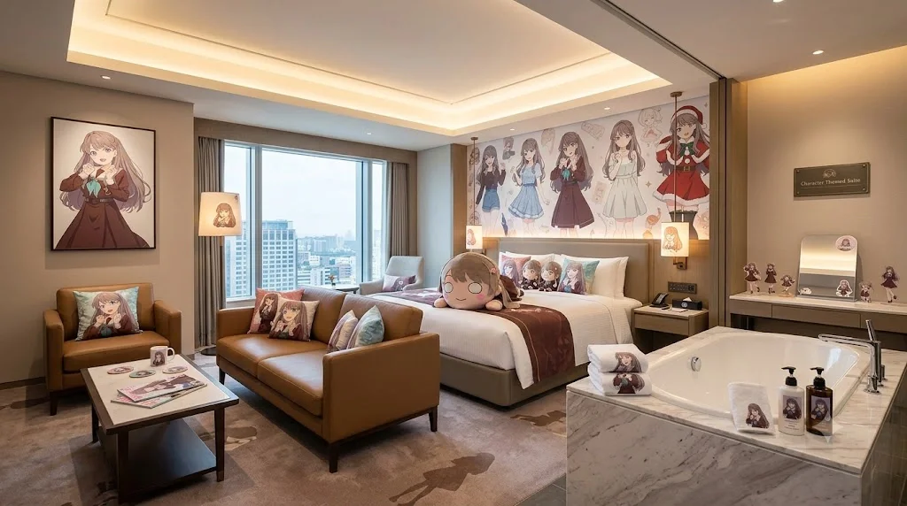
▲ 토치만 사장에게 까인 임은혜가 홧김에 자본을 부어 만들어버린 리에라몰 부속 숙박시설의 완벽한 '후지시마 메구미' 스위트룸. 산타 메구미 벽지부터 대리석 욕조까지 돈의 맛이 느껴진다.
돈 앞에서는 영혼도 팔 것 같았던 토치만 사장님이었지만, 놀랍게도 이 제안을 단칼에 거절했다. "아가씨, 돈은 고맙지만 우리 토치만은 '아쿠아(Aqours)' 멤버 9명만을 섬기는 신성한 근본 호텔이오. 타 그룹 캐릭터가 이 성지에 들어오는 건 내 오타쿠적 신념이 허락하지 않소!"라며 예상치 못한 철벽 방어를 시전한 것이다. 자존심에 스크래치가 난 은혜는 씩씩대며 호텔을 빠져나와, 홧김에 아빠(리에라몰 점장)를 졸라 아예 리에라몰 본관에 딸린 부속 고급 숙박시설의 스위트룸을 통째로 '후지시마 메구미' 테마로 뜯어고쳐 버렸다. 위 사진에 나오는 저 무시무시한 메구미 산타걸 벽지와 대리석 욕조가 있는 방이 바로 그것이다. 결과적으로 토치만 사장의 깐깐한 신념이 효빈시에 또 다른 전설의 성지 객실을 탄생시키는 나비효과를 불러일으켰다.3. 박효빈 시장과 천 비서실장의 '리코룸' 대놓고 당당한 단골 행보
인터넷에 떠도는 '박효빈 시장이 심야에 첩보 영화 찍듯 리코룸에 몰래 숨어든다'는 소문은 완전한 헛소리다. 현실의 박효빈 시장과 천 비서실장은 시의회 야당 의원들이 "시장이 주말마다 일본 애니메이션 호텔에나 들락거린다!"며 시정 질문에서 핏대를 세우며 공격하든 말든, "내 개인 사비 내고 합법적으로 내 최애 덕질하며 자는데 니들이 보태준 거 있냐? 알빠노!"를 시전하는 완벽한 마이웨이를 걷고 있다. 애초에 취임 전부터 대놓고 덕후 인증을 밥 먹듯이 한 시장인데 숨길 이유가 전혀 없기 때문이다.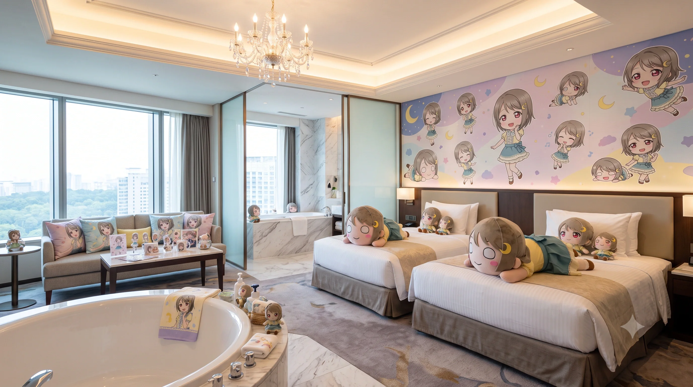
▲ 토치만 호텔에서 카스밍 룸 개조를 거절당하자, 박효빈 시장이 빡쳐서(?) 본인 사저를 대놓고 뜯어고쳐버린 전설의 '카스밍(나카스 카스미)' 테마 룸. 시장의 자본력이 폭발한 결과물이다.
박 시장은 금요일 퇴근 시간이 되면 시청 관용차를 대놓고 호텔 정문에 주차한 뒤, 천 비서실장과 나란히 호텔 로비로 들어와 수석 컨시어지에게 당당하게 "늘 묵던 벚꽃 방(리코룸)으로 줘."라며 체크인을 한다. 방 안에서 핑크색 야광봉을 흔들며 밤새 라이브 영상을 시청하는 건 사실이지만 첩보는 아니다.
더 황당한 사건은 그 이후에 일어났다. 리코룸에 만족한 박 시장이 어느 날 토치만 사장님을 독대하여 "사장님, 호텔 방 하나만 내 최애인 '나카스 카스미(카스밍)' 테마로 만들어주쇼. 내가 시 예산은 못 써도 내 사비 털어서 지원할 테니 앙증맞은 노란색으로 좀 꾸며봅시다."라고 시장의 권위(?)를 내려놓고 간곡히 부탁했다. 하지만 임은혜 때와 마찬가지로 "아쿠아 외엔 절대 불가"라는 사장님의 굳건한 신념에 또다시 컷(거절)당하고 말았다.
거절당해 단단히 삐진 박효빈 시장은 "아씨, 더러워서 내가 직접 만들고 만다!"라며 아예 본인이 거주하는 효빈시의 거대한 시장 사저(개인 주택) 내부를 '나카스 카스미' 테마로 미친 듯이 뜯어고치는 기행을 벌였다(위 사진 참조). 거대한 원형 욕조와 달빛 카스밍 벽지로 둘러싸인 이 방은 시청 공무원들 사이에서 전설이 되었다. 게다가 박 시장은 카스밍 하나로 만족하지 못하고, 남는 사저 방들을 각각 사쿠라우치 리코, 안요지 히메, 아야세 에리, 탕 쿠쿠 테마로 멀티룸 세팅을 해버리는 등, 토치만 호텔 못지않은 개인 오타쿠 박물관을 완성했다는 엄청난 뒷이야기가 전해진다.4. 어벤져스의 '샤이니 골드 스위트룸' 광기의 룸서비스 골든벨 파티
효빈시 최고의 금수저 글로벌 호텔 후계자인 오하리(마리 포지션)가 당가동 자경단 어벤져스 멤버 9명을 전원 이끌고 17층 최상층 '샤이니 골드 스위트룸'을 하루 통째로 묻지도 따지지도 않고 현금 다발로 대관한 전설의 레전드 회식 날의 일화다. 오하리가 그날따라 자신 소유의 미국 주식 배당금이 수천만 원 단위로 짭짤하게 들어와 기분이 지나치게 하이 텐션이 된 나머지, 룸서비스 전용 전화기를 들었다. 그녀는 2층 조식 뷔페 식당의 시그니처 메뉴인 '고등어 구이'와 파티시에의 영혼이 담긴 '생귤 타르트'를 "식자재 창고의 해산물 재고가 완벽하게 바닥날 때까지 15분 간격으로 계속 올려보내라"는 광기의 골든벨을 울렸다. 주방에서는 밤새 100마리가 넘는 생선을 굽느라 셰프들이 비명을 질렀다.
고급 요리가 끝도 없이 카트로 밀려 들어오자, 신이 난 흙수저 출신 고해영이 17층 발코니 창문을 열어젖히고 효빈시 야경을 향해 "오하리 사마!! 개처럼 모시겠습니다 캉캉!!"을 산울림처럼 쩌렁쩌렁 외치며 텐션을 폭발시켰다. 이에 옆 침대에서 얌전히 잠을 자려던 낯가림 소녀 석루비가 참다못해 "언니들 술도 안 마셨으면서 시끄러워 삐기잇!! 잠 좀 자자!!"라며 10만 원짜리 거위털 베개 6개를 마구 집어던지기 시작했다. 피하는 과정에서 샹들리에에 베개가 맞아 터져버렸고, 방 안이 깃털로 눈보라 치듯 휘날리는 대환장 베개 싸움 파티가 새벽 4시까지 이어졌다. 프론트로 방음 클레임이 3건이나 접수되었고, 다음 날 퉁퉁 부은 눈의 오하리가 프론트에서 블랙카드로 베개 파손비와 피해보상금을 일시불로 결제하며 무마했다.5. 도선요의 제복 코스프레 심야 응급 수선소 긴급 개장
초대형 서브컬처 축제 '효빈 애니메이션 페스티벌(HAF)' 본행사 전날 밤 11시 30분, 호텔 1층 로비에서 가슴 찢어지는 통곡 소리가 울려 퍼졌다. 수백만 원짜리 수제 코스프레 의상 드레스 자락이 엘리베이터 문틈에 끼어 심하게 찢어지는 바람에, 외국인 코스어 투숙객이 바닥에 주저앉아 엉엉 울고 있는 것이었다. 내일 당장 무대에 서야 하는데 의상이 세로로 두 동강이 나버려 절망적인 상황이었다.
이때 7층 '전속 전진 제복 룸(요우룸)'에 투숙하며 의상을 손보고 있던 의상학과 수석 출신 재봉틀 마술사 도선요가 프론트의 다급한 SOS 호출을 받았다. 선요는 안경을 치켜올리며 "누군가의 무대가 망가지는 건 볼 수 없지! 전속 전진 요소로!"를 외치고, 잠옷 차림으로 공업용 재봉틀과 반짇고리 세트를 양손에 들고 번개처럼 뛰어 내려왔다. 그녀는 로비 소파의 탁자를 치워 임시 테이블을 깔고, 오버록과 숨김 감침질 기술을 화려하게 섞어가며 단 10분 만에 찢어진 솔기를 새 옷보다 더 튼튼하게 완벽하게 가봉해 냈다. 수선이 완료된 의상을 받아 든 외국인 코스어는 감격의 오열을 하며 연신 "유 아 마이 엔젤!!"을 외쳤다. 이 광경을 숨죽여 지켜보던 오타쿠 투숙객들은 일제히 기립 박수를 보냈다. 다음 날 글로벌 커뮤니티에는 "토치만 호텔 로비에는 자정 12시가 넘으면 위기에 처한 코스어에게 나타나 기적의 바느질을 선사하는 요정(요우)이 존재한다."라는 전설이 퍼져, 매년 HAF 시즌만 되면 의상이 터진 코스어들이 자정 무렵 로비에서 도선요를 기다리며 서성이는 진풍경이 연례행사처럼 굳어버렸다.6. 이리자의 '심연의 타천사룸' 새벽 2시 쾌감펀치 물리치료 완벽 제압
주말 심야 2시, 중2병 말기 중증 환자인 인터넷 방송인 진선자가 어둠의 기운을 모으겠다며 14층 '타천사룸(요시코룸)'을 거금 들여 대관했다. 그녀는 방 대리석 바닥에 2미터짜리 거대한 헥사그램 마법진을 그리고, 500W급 대형 블루투스 우퍼 앰프를 켜버렸다. "크큭... 심연의 악마들이여 도래하라!! 열려라 지옥의 문이여!!"라며 흑마법 영창 주문을 괴성으로 외워대기 시작했다. 우퍼의 저음 진동 때문에 13, 14, 15층 위아래 전 객실의 벽이 흔들리며 층간 소음 클레임 인터폰이 프론트 데스크로 빗발치기 시작했다.
마침 바로 옆 객실 '벚꽃 소나타 룸(리코룸)'에서 일본 옥션에서 직구한 희귀 동인지 신간을 침대에 누워 읽으며 힐링하던 현직 응급실 수간호사 이리자가 그 소음에 결국 인내심의 퓨즈가 끊어지고 말았다. 덕질의 흐름을 끊는 자는 곧 환자 취급하여 처단한다는 신념을 가진 이리자는, 슬리퍼를 질질 끌며 살기를 내뿜으며 복도로 나갔다. 그녀는 청소 카트에서 마스터키를 빼앗아 요시코룸 문을 거침없이 벌컥 열어젖혔다.
진선자가 망토를 두른 채 "누, 뉘신지... 결계를 깬 침입자여...?"라며 뒤돌아보는 찰나, 이리자가 응급실 진상 제압용 무자비한 스트레이트 펀치, 일명 '쾌감펀치'를 날렸다. 주먹이 진선자의 등짝 견갑골 급소를 정확히 타격하며 "퍼억!!" 소리가 울렸다. "끄어억!" 하는 단말마와 함께 진선자는 마법진 정중앙으로 코를 박고 엎어지며 완벽한 물리치료(기절 수면)를 당했다. 이리자는 시크하게 앰프 전원 코드를 발로 차서 뽑아버리고는 "마법은 정신병원 가서 부려라, 진상아." 한마디를 차갑게 남기고 방으로 유유히 돌아갔고, 14층 복도에는 다시 완벽한 평화가 찾아왔다.7. 사장님의 미친 폭주: '카난 룸 3개 기형적 증축' 공금 횡령(?) 등급 심사 사태
서브컬처 호텔 테마 기획의 불문율에 따르면, 테마 룸은 각 캐릭터당 동일한 객실 수 비율로 존재해야만 팬덤 간의 형평성 폭동을 막고 평화가 유지된다. 그러나 토치만 사장님의 지독하고도 눈먼 '마츠우라 카난' 편애증은 결국 기업 윤리를 잃고 돌이킬 수 없는 경영적 폭주를 낳고 말았다.
사장님은 야간 교대 직원 휴일 수당과 로비 대리석 보수용으로 책정된 1년 치 유지보수 예산을 장부를 조작해 몰래 빼돌렸다. 그리고는 평소 뷰가 좋아 비싸게 팔리던 17층 코너 오션뷰 일반 객실 2개를 냅다 예약 취소시킨 뒤, 불도저를 동원해 하루아침에 방 뼈대만 남기고 콘크리트까지 싹 밀어버렸다. 그는 그 자리에 빼돌린 공금과 사재를 털어, 천장에 최고급 야광 스티커 5만 장을 손수 바른 '별하늘 카난룸'과, 벽면 전체에 3D 수족관 홀로그램 래핑을 치고 바닥에 모래알 타일을 깐 '돌고래 다이빙 테마룸'을 추가로 개조해버렸다. 결과적으로 다른 캐릭터들은 9개씩 방을 가질 때, 초록색 카난 룸만 무려 3가지 기형적인 다른 버전으로 증축되어 버리는 극악무도한 밸런스 붕괴 만행을 저지른 것이다.
한 달 후, 한국관광공사에서 3성급 호텔 등급 갱신 심사를 위해 매의 눈을 가진 심사관 3명을 파견 나왔다. 메인 감사관이 도면을 보더니 "사장님, 왜 특정 초록색 머리 캐릭터 방만 기형적으로 3개나 VVIP룸으로 증축되어 있습니까? 특정 캐릭터를 숭배하는 종교 시설로 무단 변경하신 겁니까?"라고 예리하게 불법 개조를 추궁했다. 영업 정지 위기를 직감한 사장님이 식은땀을 쏟던 찰나, 수석 컨시어지가 기지를 발휘해 나섰다. "아... 심사관님! 이것이 바로 우리 효빈시 관광청이 적극적으로 추구하는 해양 생태 관광(스쿠버 다이빙) 연계형 친환경 ESG 경영의 핵심 시범 모델 객실입니다! 해양 생태계 보존 홍보 대사로 저 캐릭터를 앞세운 친환경 프로젝트죠!"라고 기적의 청산유수 논리로 뻔뻔하게 둘러대었다. 심사관은 "아... 지방 중소 호텔이 ESG 경영까지 신경 쓰다니 훌륭하군요."라며 속아 넘어갔고, 감점 없이 3성급 심사를 통과했다는 눈물겨운 전설의 사내 일화다.8. 송과영의 17층 루프탑 '미니 노천탕 10m 하이다이빙' 미수 생존 사건
당가동 어벤져스 내 압도적인 피지컬 몬스터이자, 물만 보면 앞뒤 안 가리고 뛰어들고 싶어 하는 중증 수영광 송과영(카난 포지션)이 17층 루프탑 '리틀 워터드롭' 노천탕을 이용하던 중 벌어진 아찔한 생존 해프닝이다.
탕에 몸을 반쯤 담그고 캔맥주를 마시며 화려한 네온사인 야경을 올려다보던 과영의 뇌리에 갑자기 주체할 수 없는 야생의 다이빙 본능이 끓어올랐다. 알코올이 살짝 들어간 그녀는 이성을 완전히 잃고 수심이 고작 종아리 깊이인 60cm밖에 안 되는 미니 타일 탕을 향해, 뒤쪽 미끄러운 대리석 난간 위로 훌쩍 올라갔다. 그리고는 양팔을 V자로 쫙 뻗고 무릎을 탄력 있게 굽히는, 올림픽 금메달리스트 뺨치는 완벽한 국제 규격 10m 하이다이빙 백워드(Backward) 준비 자세를 허공에서 취해버렸다.
그대로 뛰어들었다간 두개골이 박살 나 내일 아침 사회면 1면에 '호텔 17층 옥상 노천탕 기행녀, 수심 60cm에서 다이빙하다 두부 손상 변사체 발견'으로 대서특필될 절체절명의 순간이었다. 다행히 1층 매점을 다녀와 노천탕 문을 열고 뒤따라 들어오던 법적 브레인 석다연이 이 끔찍한 자살 미수 짓을 목격했다. 다연은 "이 미친 돌고래 근육 뇌야!!"라고 찢어지는 비명을 지르며 어깨에 두르고 있던 대형 젖은 비치타월을 카우보이 올가미처럼 던져 과영의 뒷덜미를 정확히 낚아챘다. 그리고 체중을 실어 뒤로 확 잡아당기며 "이 멍청아, 여기서 네 머리 깨져서 죽으면 이 호텔 영업정지에, 우리 모임 손해배상 청구액이 얼만 줄 알아?! 네 장기 다 팔아서 네가 물어낼 거야?! 뿟뿌 데스와!!"라며 과영의 명치를 무릎으로 찍어 누르고 대리석 바닥으로 패대기를 쳐버렸다. 간신히 인명사고를 막아낸 다연은 헉헉대며 주저앉았고, 턱을 찧은 과영은 "물이 달빛을 받아서 너무 깊어 보였단 말이야..."라며 억울해하다가 이리자에게 등짝을 5대 더 맞고 끌려 나갔다.9. 진선자의 우라노호시 굿즈 매점 새벽 1시 가챠 기계 '흑마법' 사태
1층 굿즈 매점에 100개 중 단 1개만 들어있다는 극악의 1% 확률 한정판 UR 등급 요시코(요한네) 아크릴 디오라마 스탠드 가챠 기계 입고 소식을 접한 진선자가 남들이 뽑아가기 전 선수를 치겠다며 벌인 기행. 그녀는 새벽 1시에 잠옷 위에 검은 망토만 두르고 로비로 몰래 내려와 오싹한 의식을 치렀다.
로비 불이 절전 모드로 절반쯤 꺼져 으스스한 분위기 속에서, 일렬로 늘어선 가챠 기계 15대 중 요시코 기계 앞에 털썩 무릎을 꿇고 엎드렸다. 그녀는 검은색 초커 십자가를 만지작거리며 눈자위를 까뒤집고 "어둠의 심연이여... 타락한 혼돈의 나락에서 나의 리틀 데몬을 이곳으로 인도하라... 타천사의 강림에 응답하라... 크큭... 계약의 동전을 바치노라..."는 기괴한 흑마법 영창 주문을 무려 20분째 중얼거리며 동전을 10만 원어치나 밀어 넣었다.
이 소름 끼치는 공포 영화 같은 모습을 지하 보안실 CCTV로 지켜보던 야간 경비용역 직원은, 진짜로 호텔에 원한을 품은 사이비 종교 광신도가 폭탄 테러나 저주 의식을 치르는 줄 알고 삼단봉과 테이저건을 빼 들고 사시나무 떨듯 덜덜 떨며 1층으로 출동했다. 경비원이 기계 뒤편 장식장에 숨어 진압 타이밍을 노리며 다가갔을 때, '덜컹' 소리와 함께 마지막으로 굴러떨어진 캡슐을 까본 진선자의 입에서 비명이 터져 나왔다. 그녀가 원하던 검은색 요시코 대신, 재고 처리용으로 섞여 있던 귤색의 해맑은 '타카미 치카' 스탠드가 중복으로 10개째 쏟아져 나오자, 진선자는 "아니야!! 이건 타천의 뜻이 아니야!! 귤은 타락하지 않았어!! 요한네사마!!!"라며 그 자리에서 대성통곡을 하며 대리석 바닥을 쾅쾅 치며 절규하기 시작했다. 그 처절하고도 찌질한 오타쿠의 가챠 폭사(爆死) 눈물을 목격한 경비원은 테이저건을 슬그머니 거두고, 깊은 측은함에 한숨을 쉬며 자신의 낡은 제복 바지에서 비상금 오천 원짜리 지폐 한 장을 꺼내 동전을 뽑아주었다. 그리고 진선자의 손에 쥐여주며 "학생... 울지 말고 이걸로 한 번만 더 돌려봐... 세상이 다 그런 거야..."라고 어깨를 따뜻하게 토닥여 위로해 주었다는 훈훈한 자본주의 전설이다.10. 석다연의 '뿟뿌 데스와' 룸 완벽 법적 철권 통제 사건
로스쿨 기말고사를 코앞에 두고 수면 부족과 카페인 과다 섭취로 신경이 극도로 날카로워진 석다연이, 조용한 집중을 위해 거금을 들여 14층 '다이아 뿟뿌 데스와 룸'에 투숙하며 밤샘 헌법 판례 암기를 하고 있던 지옥의 밤이었다. 하필 다연의 운도 지지리 없게, 같은 층 복도 끝방 대형 스위트룸에 지방에서 MT를 온 개념 없는 대학생 투숙객 무리 10여 명이 단체로 투숙해버렸다. 그들은 밤 12시가 넘은 시간에 술에 취해, 객실 문을 활짝 열어놓고 블루투스 대형 마이크 앰프를 켜서 일본 애니송 메들리 떼창을 고성방가로 부르며 복도로 튀어나와 춤을 추는 최악의 민폐 난동을 피우고 있었다.
야간 프론트 직원이 층간 소음 신고를 받고 세 번이나 올라와 제지했음에도, 취객들은 "우리가 돈 내고 놀러 왔는데 쪼잔하게 왜 이래! 여기 원래 오타쿠들 노는 데잖아!"라며 직원을 밀치고 문전박대했다. 결국 벽 너머로 들려오는 베이스 소리에 참다못해 분노 게이지가 한계치를 뚫어버린 다연이 삼색 볼펜을 부러뜨려 던지고, 다이아 컨셉의 붉은색 한복풍 실크 가운을 무협지 고수처럼 걸친 채 복도로 성큼성큼 나갔다.
그녀는 술 냄새와 토사물 냄새가 진동하는 그 방 문 앞을 딱 가로막고 서서, 팔짱을 낀 채 얼음장같이 차갑고 날카로운 눈빛으로 입가의 매력점을 파르르 씰룩였다. 춤을 추던 학생들이 벙쪄서 쳐다보자, 단전에서 끌어올린 차분하지만 살기 어린 목소리로 일갈했다. "야 이 무뇌충들아. 지금 너희들의 고성방가 및 복도 점거 행위는 경범죄처벌법 제3조 1항 21호 인근소음 위반 및 제1항 11호 음주소란에 정확히 해당하며, 동시에 타 투숙객의 수면권과 평온을 심각하게 침해하여 민법 제750조 불법행위에 기한 막대한 손해배상 청구 및 정신적 위자료 청구의 요건을 아주 완벽하고 교과서적으로 충족하셨군요. 또한 프론트 직원의 업무를 위력으로 방해했으니 형법 제314조 업무방해죄까지 성립합니다. 스마트폰 동영상으로 너희들 면상 증거 수집용 채증 녹음은 10분 전부터 이미 끝났습니다. 지금 즉시 관할 중구 지구대에 112 다이렉트 신고를 넣어 너희를 현행범 체포로 경찰차에 태워 넘겨줄까요, 아니면 지금 당장 스피커 코드 뽑고 쥐새끼처럼 침대에 찌그러져 숨 쉬지 말고 잘래요? 선택해. 뿟뿌 데스와!!"라고 숨도 쉬지 않고 딕션 정확한 아웃사이더 래퍼처럼 무자비한 법 조항을 쏟아부었다.
소름 끼치게 서늘하고 논리적인 법적 팩트 폭격과 붉은 가운을 입은 다이아 코스프레의 살벌한 카리스마에 영혼까지 압도당한 학생들은, 1초 만에 술이 확 깨버려 무릎을 꿇고 90도로 허리를 굽히며 "살려주십시오 누님! 고소만은 제발 참아주십쇼!"라며 싹싹 빌었다. 그들은 번개처럼 마이크 전원을 뽑고 방어적으로 문을 철컥 잠그고 이불속으로 벌벌 떨며 도망쳤다. 그날 밤 14층 복도에는 아침까지 사람 숨소리조차 들리지 않는, 다이아룸 벽면 족자 글씨처럼 '완벽하고도 절대적인 정숙'이 유지되었다.5. 여담
- 할인 이벤트: 마츠우라 카난의 생일(2월 10일)에는 숙박비를 21% 할인해준다. 반면 호텔 이름과 비슷한(?) 다른 멤버의 생일에는 10%만 해준다. 사장님의 편애가 노골적이다.
- 사장님이 가끔 1층 컨시어지 데스크 뒤에서 스쿠페스(리듬게임)를 하고 있는 모습이 목격된다. 콤보가 끊기면 멘탈이 나가 체크인 시간이 늦어질 수 있으니 조용히 기다려주자.
- 바로 앞 7호선 조유동3가역에서 트램을 타면 효빈성이나 리엘라 스테이로 한 번에 이동할 수 있어 성지순례 거점으로 인기가 폭발적이다.
6. 교통
- 도시철도: 7호선 (노면전차) 조유동3가역 하차. 도보 1분 거리의 초역세권.
- 버스: 조유동 주민센터 정류장 하차.
각주
- 팬들은 '토치만'이 '타천(Tochiman?)'의 변형이거나, 치카의 별명과 섞인 무언가라고 제멋대로 해석했다. 사실 정확한 유래는 며느리도 모른다. ↩
- 2. 조식 뷔페 식당 '선샤인 티어즈' (2층):